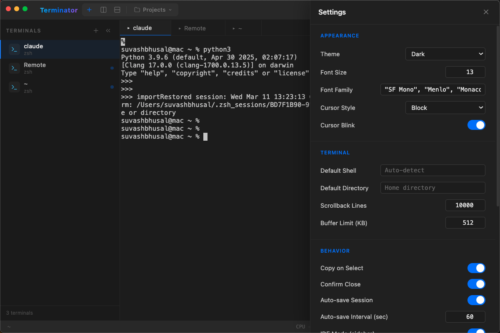

Split panes, Claude AI autocomplete, SSH manager, Docker dashboard, and 50+ keyboard shortcuts — all in one app.
Features
Terminator replaces your terminal, tmux, and half your DevOps dashboard. Built for developers who demand more.
Claude-powered ghost text as you type. Full AI chat sidebar for debugging, explaining code, and generating commands.
Horizontal, vertical splits, and tabs with drag-to-resize. Zoom any pane to fullscreen and back with one shortcut.
Toggle a sidebar with project grouping and editor-style tabs. Like VS Code's integrated terminal, but the terminal is the app.
Cmd+P to search every action: switch panes, change themes, open SSH bookmarks, run snippets, fuzzy file finder, and more.
Define multi-step command pipelines and manage cron jobs visually. Automate complex workflows from a simple UI.
Save your entire workspace — layout, directories, scroll history — and auto-restore on next launch.
Save SSH connections, manage bookmarks, and discover running tmux/screen sessions on remote hosts automatically.
View listening ports, identify processes, kill them from the UI. See Docker containers with status, image, and uptime.
Send keystrokes to every pane simultaneously. Perfect for configuring multiple servers or running identical commands.
Dark, Solarized, Dracula, Monokai, Nord, Light. Extend with community plugins for custom themes, commands, and status bars.
Control Terminator from any shell: create, list, attach, send commands, and kill sessions. Full tab completion included.
Context isolation, sandboxed renderer, input validation, path traversal protection. 133 tests covering security edge cases.
Why Terminator
Traditional terminals make you choose between power and simplicity. Terminator gives you both.
See it in action
Split panes, AI suggestions, and a command palette — all in a sleek, GPU-accelerated interface.

Keyboard-first
Every action is one shortcut away. On Windows/Linux, substitute Ctrl for Cmd.
Get started
Available on macOS, Windows, and Linux. Choose the method that works for you.
Recommended for macOS
brew install --cask terminator-terminal
macOS (.dmg) · Windows (.exe) · Linux (.AppImage)
# Grab the latest release github.com/suvash-glitch/Terminator/releases
For contributors and tinkerers
git clone https://github.com/suvash-glitch/Terminator.git cd Terminator && npm install npm run rebuild # rebuild node-pty npm start
Join developers who've switched to a smarter, faster terminal workflow.